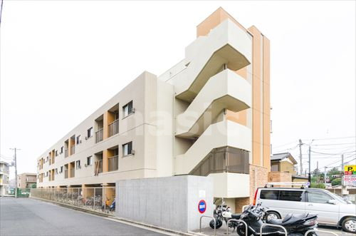
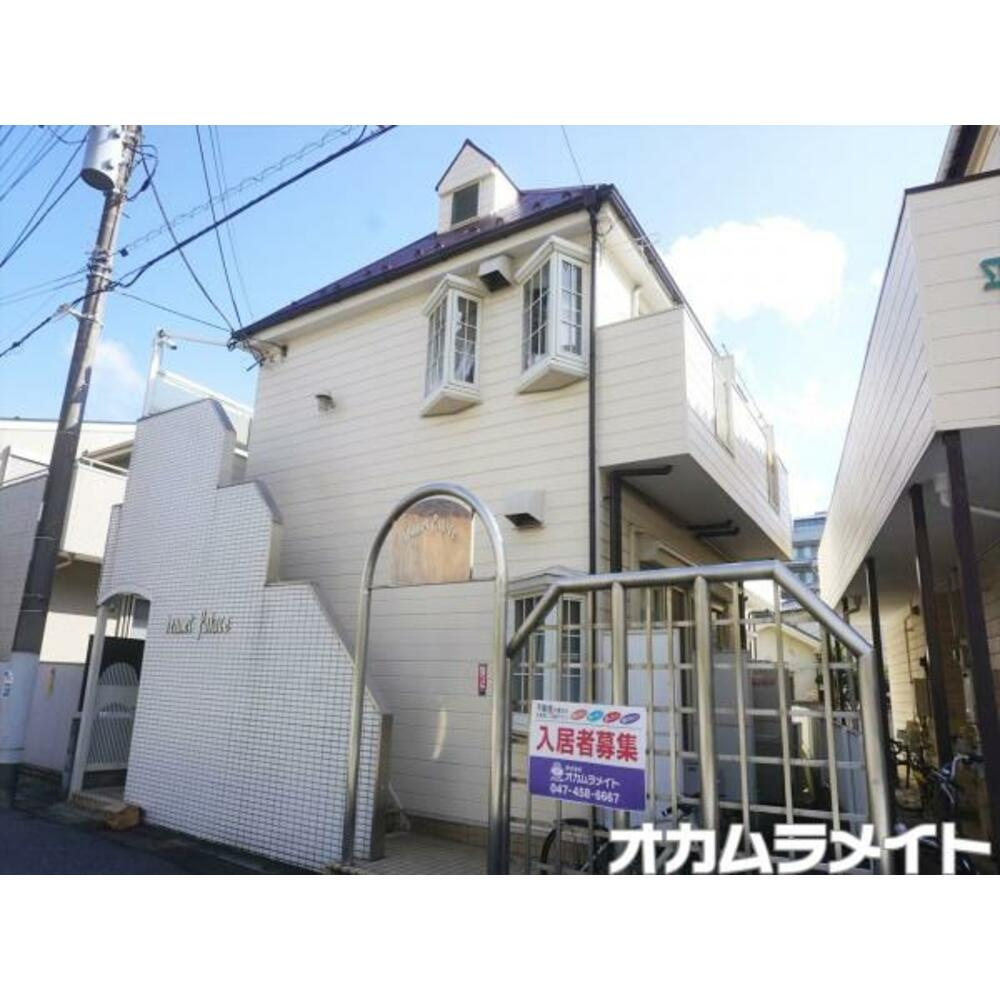
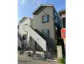
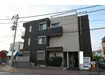

カラーブリア
1番のおすすめ!!
京成津田沼から徒歩4分、津田沼駅から徒歩11分ととても近く、電車で通勤する人にはもってこいの立地です。
家賃も5.5万と手ごろな価格のわりに、リビング付き、部屋6.7畳、風呂トイレ別斗かなりの好物件となっています。
他にもエントランスにオートロックがついていることや、コンビニまで徒歩2分で行ける立地の良さなどすべての面でよく、このサイトを作るうえで様々な物件を調べましたが、個人的に住みたい物件1位でした。
家賃も5.5万と手ごろな価格のわりに、リビング付き、部屋6.7畳、風呂トイレ別斗かなりの好物件となっています。
他にもエントランスにオートロックがついていることや、コンビニまで徒歩2分で行ける立地の良さなどすべての面でよく、このサイトを作るうえで様々な物件を調べましたが、個人的に住みたい物件1位でした。

ジュネパレス 津田沼
とにかく安い! 家賃3.7万円!!
ジュネパレス津田沼は津田沼駅から徒歩13分と少し遠いですが、値段がとても安く、大学生や新卒のあまりお金がない世代におすすめな物件になっています。
また、1人暮らしをしようと考えたときに一度は憧れるロフトも付いていることで、より部屋を広く使うことができます。
しかし、ユニットバスになっていることが個人的にはマイナスですが、家賃3.7万ならば仕方がないかなとも思います。
また、1人暮らしをしようと考えたときに一度は憧れるロフトも付いていることで、より部屋を広く使うことができます。
しかし、ユニットバスになっていることが個人的にはマイナスですが、家賃3.7万ならば仕方がないかなとも思います。

ROSETTE
全てが高水準
京成津田沼駅から徒歩5分と近く、通勤に便利です。
また近くのミニストップまで、405mととても近く買い物にも絵がるに行くことができます。
あとは何といってもロフトがあることが特徴で、このおかげで部屋をより広く感じることができると思います。
しかし、風呂に洗面所がついているため使いづらそうと感じてしまいました。
また近くのミニストップまで、405mととても近く買い物にも絵がるに行くことができます。
あとは何といってもロフトがあることが特徴で、このおかげで部屋をより広く感じることができると思います。
しかし、風呂に洗面所がついているため使いづらそうと感じてしまいました。

オリーブ津田沼
立地よし、広さよし、何より綺麗
1DKという部屋の広さを誇りながら、オートロック、エアコン付き、TVモニタ付きインターホン、浴室に乾燥機付きと設備がとても良いのが特徴です。
他にも駅まで徒歩7分のほかに、スーパー、コンビニ、マクドナルド、病院すべてに近く立地が上3つと比べて圧倒的にいいです。
しかし、これだけ条件が良ければ家賃も他と比べると高く、8万円となっています。しかし、家賃に見合うものはあると思いました。
他にも駅まで徒歩7分のほかに、スーパー、コンビニ、マクドナルド、病院すべてに近く立地が上3つと比べて圧倒的にいいです。
しかし、これだけ条件が良ければ家賃も他と比べると高く、8万円となっています。しかし、家賃に見合うものはあると思いました。
